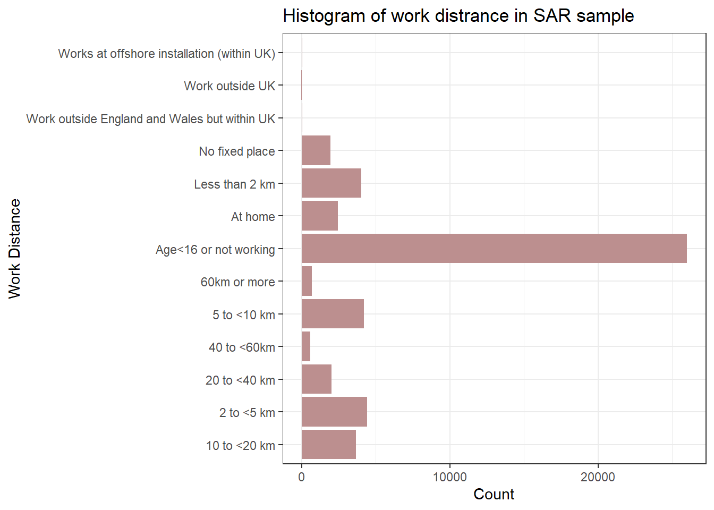
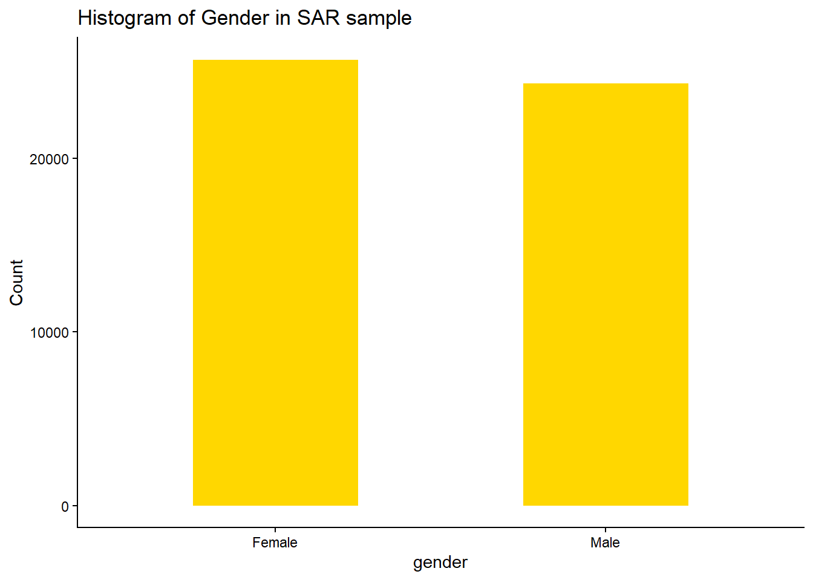

Last week, we learnt how to use qualitative variables in multiple linear regression model to understand the relationship between independent variables X1 … Xn and the dependent variable Y. Today we will learn to use logistic regression for binary dependent variable. A logistic regression model is a type of regression analysis used when the dependent variable is binary (e.g., “success/failure” or “0/1”). It estimates the probability of one outcome relative to the other using a logistic function. This model is commonly used in situations like predicting disease presence (yes/no) or customer churn (stay/leave). The independent variables can be continuous, categorical, or a mix of both. The model’s output is in the form of odds ratios, showing how predictors affect the likelihood of the outcome.
Estimate and interpret a logistic regression model
Assess the model fit
The application context of a binomial logistic regression model is when the dependent variable under investigation is a binary variable. Usually, a value of 1 for this dependent variable means the occurrence of an event; and, 0 otherwise. For example, the dependent variable for this practical is whether a person is a long-distance commuter i.e. 1, and 0 otherwise.
In this week’s practical, we are going to apply logistic regression analysis in an attempt to answer the following research question:
RESEARCH QUESTION: Who is willing to commute long distances?
The practical is split into two main parts. The first focuses on implementing a binary logistic regression model with R. The second part focuses the interpretation of the resulting estimates.
5.1 Knowing the dataset and descriptive analysis
Prepare the data for implementing a logistic regression model. The data set used in this practical is the “sar_sample_label.csv” and “sar_sample_code.csv”. The SAR is a snapshot of census microdata, which are individual level data. The data sample has been drawn and anonymised from census and known as the Samples of Anonymised Records (SARs).
You may need to download the two datasets and also the data dictionary from Canvas if you haven’t. Double click to open both .csv files you may find they have exactly same column names - yes, they are in fact the same spreadsheet but ‘sar_sample_label.csv’ is more readable for the cell contents as they are in text format but cells in the ‘sar_sample_code.csv’ is in coding format. The ‘SAR_dictionary’ is create to help you understand what the columns mean, just like the FRS dictionary for the FRS datasets last week. Yes, the two SAR csv files are actually the same dataframe, only one uses the label as the value but the other uses the code. This is quite normal as when we doing surveys, we use text as the options of multiple choice questions for respondents to choose from, and therefore the collected survey results are in the ‘sar_sample_label’ format. The label format is usually more readable and is good to do descriptive analysis as we will show in today’s content. However, we may find the coding format is more concise for writing the code and thus will be used during regression analysis. Please notice that coding the labels into numbers, doesn’t mean the categorical/qualitative variable has been converted into numeric/continuous numbers.
To know the dataset better, we can run dim() to know who many individuals (rows) in this sample data and how many variables (columns) have been recorded.
dim(sar_label)
[1] 50000 39
#ordim(sar_code)
[1] 50000 39
So there are 50,000 respondents in the sample dataset and 39 variables are included.
After browsing both data sheets and also the data dictionary (sometimes we call it meta data), you may notice that all the columns in the SAR dataset is categorical/qualitative type. Therefore, if we run the summary() function for the dataframes, as we did in previous weeks for the Census data or the FRS dataset, the outputs of the summary() may not be very useful. Again, please notice that the figures in the sar_code.csv is not mean actual numbers, but the codes of different categories of the qualitative variables. Therefore, the summary() results at there is not useful. Please reflect what we’ve learnt in last week’s, when the variables if categorical/qualitative type, how we do the descriptive analysis for them?
summary(sar_code)summary(sar_label)
So, the answer is we focus on summarising the frequency and distribution of categories within the variable and the function in R for doing this is table(). For example, the variable “work_distance” captures a person’s commuting distance. We can run the table() for both label and code csv to understand the distribution, composition and diversity of categories of the ’’work_distance” in the data. Try to repeat what we have learnt in Week 3 to finish the descriptive analysis for the categorical variables in SAR (by ggplot2).
table(sar_label$work_distance)
10 to <20 km
3650
2 to <5 km
4414
20 to <40 km
2014
40 to <60km
572
5 to <10 km
4190
60km or more
703
Age<16 or not working
25975
At home
2427
Less than 2 km
4028
No fixed place
1943
Work outside England and Wales but within UK
29
Work outside UK
21
Works at offshore installation (within UK)
34
To create a chart as part of the descriptive analysis, exactly as what we did in Week 3, we use the library ggplots and the codes:
library(ggplot2)ggplot(sar_label, aes(x = work_distance)) +geom_bar(fill ="rosybrown") +labs(title ="Histogram of work distrance in SAR sample", x ="Work Distance", y ="Count") +coord_flip()+#Flip the Axes, add a # in front of this line, to make the code in gray and you will see why we would better flip the axes at heretheme_bw()

We have learnt that for the categorical/qualitative variables, we need R to treat them as factor type. Therefore, if we want to create descriptive analysis charts by using sar_code , we need first convert the code numbers from numeric to factor type.
library(ggplot2)ggplot(sar_code, aes(x =as.factor(work_distance))) +geom_bar(fill ="rosybrown") +labs(title ="Histogram of work distrance in SAR sample", x ="Work Distance", y ="Count") +coord_flip()+#Flip the Axes, add a # in front of this line, to make the code in gray and you will see why we would better flip the axes at heretheme_bw()
You may also realise that this chart is not that readable to be used as a descriptive analysis chart to put in the report as the Y-axis are all in codes, therefore the first chart created by labels is a better choice. Based on ‘SAR_dictionary.xlsx’, we learn how the codes map to the categories for the variable work_distance in both csv.
Code for Work_distance
Categories
-9
Age<16 or not working
1
Less than 2 km
2
2 to <5 km
3
5 to <10 km
4
10 to <20 km
5
20 to <40 km
6
40 to <60 km
7
60km or more
8
At home
9
No fixed place
10
Work outside England and Wales but within UK
11
Work outside UK
12
Works at offshore installation (within UK)
There are a variety of categories in the variable, however, we are only interested in commuting distance and therefore in people reporting their commuting distance. Thus, we will explore the numeric codes of the variable ranging from 1 to 8.
As we are also interested in exploring whether people with different socio-economic statuses (or occupations) tend to be associated with varying probabilities of commuting over long distances, we further filter or select cases.
table(sar_label$nssec)
Child aged 0-15
9698
Full-time student
3041
Higher professional occupations
3162
Intermediate occupations
5288
Large employers and higher managers
909
Lower managerial and professional occupations
8345
Lower supervisory and technical occupations
2924
Never worked or long-term unemployed
2261
Routine occupations
4660
Semi-routine occupations
5893
Small employers and own account workers
3819
ggplot(sar_label, aes(x =fct_rev(fct_infreq(nssec)))) +geom_bar(fill ="tan") +labs(title ="Histogram of NSSEC in SAR sample", x ="NSSEC", y ="Count") +coord_flip()+#Flip the Axes, add a # in front of this line, to make the code in gray and you will see why we would better flip the axes at heretheme_bw()
From ‘SAR_dictionary.xlsx’, we learn what each code indicate corresponding category for variable nssec. For the following regression model, we select people who reported an occupation, and delete cases with numeric codes from 9 to 12, who are unemployed, full-time students, children and not classifiable.
Code for nssec
Category labels
1
Large employers and higher managers
2
Higher professional occupations
3
Lower managerial and professional occupations
4
Intermediate occupations
5
Small employers and own account workers
6
Lower supervisory and technical occupations
7
Semi-routine occupations
8
Routine occupations
9
Never worked or long-term employed
10
Full-time student
11
Not classifiable
12
Child aged 0-15
Now, similar to next week, we use the filter() to prepare our dataframe today. You may already realise that using sar_code is easier to do the filtering.
Q1. Create descriptive analysis for the two variables “work_distance”, “nssec” and “sex” with the new data, including (1) summarise the frequencies and (2) create histogram charts for the three variables.
5.2 Preparing the input variables
For a logistic regression model, we first need to recode the “work_distance” variable into a binary dependent variable as our independent variable.
A simple way to create a binary dependent variable representing long-distance commuting is to use the mutate() function as discussed in last week’s practical session. Before creating the binary variables from the “work_distance” variable, we need to define what counts as a long-distance commuting move. Such definition can vary. Here we define a long-distance commuting move as any commuting move over a distance above 60km (the category of “60km or more”).
Q2.Do descripitve analysis to the new sar_df dataframe with new column named New_work_distance by using the codes you have learnt.
The independent variables are gender and socio-economic status. The gender variable sex is a categorical variable. Therefore, as we’ve learnt last week, before adding the categorical variables into the regression model, we need first make it a factor and then identify the reference category. For gender, we use male as the basline. Prepare your “sex” variable before the regression model:
Then, we prepare socio-economic status variable nssec for the regression model. We are interested in whether people with occupations being “Higher professional occupations” are associated with a lower probability of commuting over long distances when comparing to people in other occupations. Therefore by using the “Higher professional occupations” code 2, we run the code as below:
Compare to the statistical inference in a multiple linear regression model context (you have done in Week 2 and 3), the interpretation of coefficients (B) and odds ratios (Exp(B)) for the logistic regression model have some similarity and differences:
It is the same that we read p-values of regression coefficients to assess significances of coefficients; for instance, by comparing p-values to the conventional level of significance of 0.05:
· If the p-value of a coefficient is smaller than 0.05, the coefficient is statistically significant. In this case, you can say that the relationship between an independent variable and the outcome variable is statistically significant.
· If the p-value of a coefficient is larger than 0.05, the coefficient is statistically insignificant. In this case, you can say or conclude that there is no statistically significant association or relationship between an independent variable and the outcome variable.
It is different in the way we interpret the regression coefficients (B) as we need to read the odds ratios (Exp(B)) from exp(coef(m.glm))
o For the variable sex, a negative sign and the odds ratio estimate indicate that the probability of commuting over long distances for female is 0.693 times less likely than male (the reference group), with the confidence intervals (CI) or likely range between 0.63 to 0.75, holding all other variables constant (the socio-economic classification variable). Put it differently, being females reduces the probability of long-distance commuting by 30.7% (1-0.693).
o For variable nssec, a positive significant and the odds ratio estimate indicate that the probability of long-distance commuting for those whose socio-economic classification as:
the p-value of Large employers and higher managers (nssec=1) is > 0.05, so there is no statistically significant relationship between large employers and higher managers and long-distance commuting;
Lower managerial and professional occupations (nssec=3) are 0.679 times likely for long-distance commuting when comparing to our reference category (nssec=2, higher prof occupations), holding all other variables constant (the Sex variable), with a likely range (CI) between 0.60 to 0.77. Thefore we can also say that the workers in lower managerial and professional occupations has 32.1% (1-0.679) less probability than the higher professional workers to travel longer than 60km for work when the gender is the same.
Small employers and own account workers (nssec=5) are 3.409 times more likely than the reference category (nssec=2, higher prof occupations), when holding the gender variable the same, with a likely range (CI) of between 3.00 to 3.87.
Compare to the higher professional occupations (nssec=2), the worker in Routine occupations (nssec=8) are 0.226 times (or 22.6%) likely to travel more than 60km to work, with the CI between 0.19 to 0.27. when other variable constant. Or, we can see being routine occupations decreases the probability of long-distance commuting by 77.4% (1-0.226).
Q3. Can you write down the findings you learnt from the model outcomes to other occupation groups (nssec = 4, nssec = 6 and nssec =7)?
5.3.2Model fit
We include the R library pscl for calculate the measures of fit.
Warning: package 'pscl' was built under R version 4.5.1
Classes and Methods for R originally developed in the
Political Science Computational Laboratory
Department of Political Science
Stanford University (2002-2015),
by and under the direction of Simon Jackman.
hurdle and zeroinfl functions by Achim Zeileis.
library(pscl)
Relating back to this week’s lecture notes, what is the Pseudo R2 of the fitted logistic model (from the Model Summary table below)?
llhNull: The log-likelihood of the null model (without predictors).
G2: The likelihood ratio statistic, showing the model’s improvement over the null model.
McFadden: McFadden’s pseudo R-squared (a common measure of model fit).
r2ML: Maximum likelihood pseudo R-squared.
r2CU: Cox & Snell pseudo R-squared.
Different from the multiple linear regression, whose R-squared indicates % of the variance in the dependent variables that is explained by the independent variable. In logistic regression model, R-squared is not directly applicable. Instead, we use pseudo R-squared measures, such as McFadden’s pseudo R-squared, or Cox & Snell pseudo R-squared to provide an indication of model fit. For the individual level dataset like SAR, value around 0.3 is considered good for well-fitting. Therefore, our model is not that robust for prediction but still explain the association between variables and the categories. To improve the model, we may need more variables as the independent variables, you may identify some based on the related literature or debates on this topic.
5.3.3 Recode Socio-economic status variable and explore commuting differences
This time, we want to know whether “Lower supervisory and technical occupations”, “Semi-routine occupations” and “Routine occupations” are associated with higher probability of commuting over long distance when comparing to people in other occupation.
We can use mutate() to create a new column, set the value of “Lower supervisory and technical occupations”, “Semi-routine occupations” and “Routine occupations” as original, while the rest as “Other occupations”. Here by using the SAR in code format, we can make this more easier by using:
Or by using if_else and %in% in R, we can achieve the same result. %in% is an operator used to test if elements of one vector are present in another. It returns TRUE for elements found and FALSE otherwise.
Use “Other occupations” (code: 0) as the reference category by relevel(as.factor()) and then create the regression model: glm(New_work_distance~sex + New_nssec, data = sar_df, family= "binomial"). Can you now run the model by yourself? Find the answer at the end of the practical.
Q4. If we want to explore whether people from lower NSSEC groups show lower probability of commuting longer than 60km compared with other occupations, how will we prepare the input independent variables and what will be the specified regression model?
5.3.4 Prediction using fitted regression model
Relating to this week’s lecture, the log odds of the person who is will to long-distance commuting is equal to:
Log odds of long-distance commuting = 0.188 + 0.693 * sexFemale + 0.679 * nssec3 + 0.357*nssec4 + 3.409*nssec5 + 0.249*nssec6 + 0.237*nssec7 + 0.226*nssec8. We don’t include nssec1 as the previous result shows that it is not statistically significant, so we won’t use the model to predict individuals that as nssec=1 occupation.
By using R, you can create the object you would like to predict. Here we created three person, see whether you can interpret their gender and socio-economic classification?
So let us look at these three people. The first one, for a male who classified as Semi-routine occupation in NSSEC, the probability of he travel over 60km to work is only 4.26%. For the second one, a female who is in Lower managerial and professional occupation, the probability of long-distance commuting is 8.11%. Now you know the prediction outcomes for our last person. Remind: the model fitting result shows the model is not very robust, therefore the prediction may not very solid as well.
5.4Extension activities
The extension activities are designed to get yourself prepared for the Assignment 2 in progress. For this week, try whether you can:
Select a regression strategy and explain why a linear or logistic model is appropriate
Perform one or a series of regression models, including different combinations of your chosen independent variables to explain and/or predict your dependent variable
5.5Answers for Qs
Answer for Q1
For Q1, we have already had the codes for work_distance and nssec, so the only missing variable is sex:
To summaries the frequency of each category, we use code:
table(sar_label$sex)
Female Male
25677 24323
To create bar charts for the distribution and composition of the gender variable in the SAR sample, we can run:
ggplot(sar_label, aes(x = sex)) +geom_bar(fill="gold",width=0.5) +labs(title ="Histogram of Gender in SAR sample", x ="gender", y ="Count")+#set text infotheme_classic()#choose theme type, try theme_bw(), theme_minimal() see differences

Answer for Q2
Similarly, the descriptive analysis for the newly created variable New_work_distance in sar_df should include:
table(sar_df$New_work_distance)
0 1
29954 3072
Here we see the categories of New_work_distance are in numeric type 0 or 1 (as we used code sar_df <- sar_df %>% mutate( New_work_distance = if_else(work_distance >6, 1,0)) to do so), therefore in the histogram code, we use as.factor() to convert it as factor type.
ggplot(sar_df, aes(x =as.factor(New_work_distance))) +geom_bar(fill="forestgreen",width=0.5) +labs(title ="Histogram of New_work_distance in SAR sample", x ="gender", y ="Count")+#set text infotheme_classic()#choose theme type, try theme_bw(), theme_minimal() see differences
Now we can use the frequency and the bar chart to report that according to our definition of long-distance travelling to work (over 60 km), there are 3072 individual are long-distance commuters in the SAR sample, which makes up 6.14% (3072/50000) of the sample.
Answer for the model in Q4
In Q3, we we want to explore whether people with occupation being “Large employers and higher managers”, “Higher professional occupations” and “Routine occupations” are associated with higher probability of commuting over long distance when comparing to people in other occupation. So we create the variable New_nssec with 0 “Other occupations”, but still keep “1”, “2” and “8” still as original categories.
So we can first have a check of our new variable New_nssec:
table(sar_df$New_nssec)
0 6 7 8
20063 2790 5704 4469
Then we set the reference categories: sex as 1 (male) and New_nssec as 0, which is “Other occupations”: